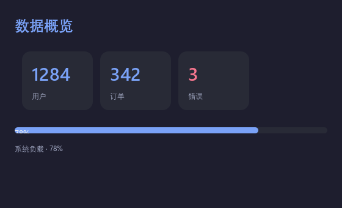
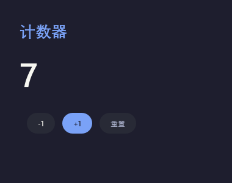
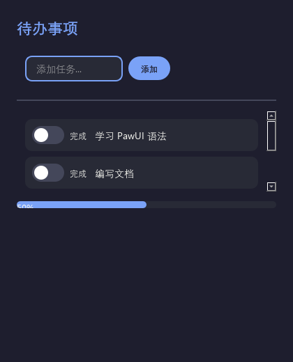
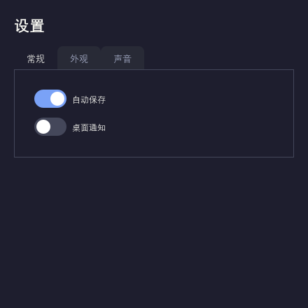
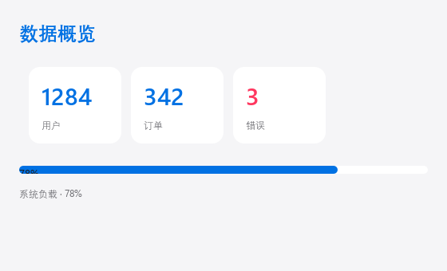
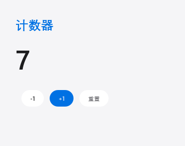

用 Python 写界面
像写 HTML 一样简单
PawUI 把类 HTML 的声明式语法带给 Qt。写 .paw 文件、用 Python 处理逻辑，状态一变界面自动刷新——没有构建，没有前端工具链。
<Window title="Counter" width="400"> <Column padding="32" spacing="16"> <Text size="48" bold>{$count}</Text> <Button on_click="inc">+1</Button> </Column> </Window> <script> state.count = 0 def inc(): state.count = state.count + 1 </script>
# 安装 $ pip install pawui # 运行 $ pawui app.paw # 热重载开发 $ pawui watch app.paw # 语法检查 $ pawui check app.paw
为什么选择 PawUI
把命令式的 Qt 样板代码收敛成声明式语法，让你专注于界面本身。
零构建，直接运行
写 .paw 文件直接运行，不需要打包器、编译器或任何前端工具链。
pip install pawui响应式状态
{$count} 绑定状态，赋值即刷新界面，无需手动操作控件。
原生渲染
Qt 抗锯齿、圆角、悬停态、IME 中文输入，全部原生处理。
双主题与自定义色
内置 dark / light，通过颜色令牌完全自定义。
声明式入场动画
加一个 animate 属性即可淡入、滑入或展开，支持缓动与逐个延时。
热重载，状态保留
保存 .paw 文件，窗口自动重建，State 与脚本函数保持不变。
声明式描述，原生体验
组件树直接映射到 Qt 控件。布局、状态与交互在同一种语法里表达，代码读起来就是界面的样子。
- ✓容器嵌套即布局，无需手动管理 geometry
- ✓事件处理器就是普通 Python 函数
- ✓bind 直接完成双向绑定
- ✓异步任务不阻塞界面

真实运行的 PawUI 应用
以下截图由 PawUI 在 Qt 中原生渲染——不使用任何 Web 技术，不是概念图。




同一份代码，两种主题

light开箱即用的 17 个组件
从布局到交互，覆盖常见界面需求。每个组件都支持动画与弹性拉伸。
三步构建第一个应用
安装
一行命令完成，PySide6 依赖自动安装。
pip install pawui
编写 .paw
用类 HTML 语法描述界面，用 Python 处理逻辑与状态。
运行
窗口即开即用，开发时开启热重载。
pawui watch app.paw
一行命令，从零到跑
支持 Windows / macOS / Linux，核心依赖极简。
$ pip install pawui Successfully installed pawui-? PySide6-6.5.0 $ pawui app.paw # 窗口已打开 $ pawui check app.paw ✓ app.paw: syntax OK Elements: 1 Script: yes